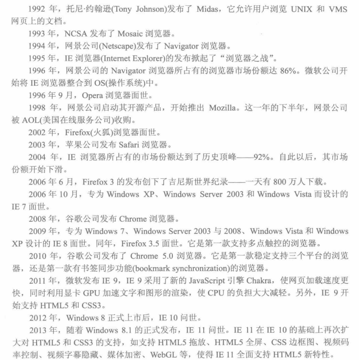

浏览器是一个软件程序，用于与WWW建立连接并与之进行通信。通过浏览器，用户可以查阅网上的相关信息。
真正开启互联网时代的浏览器是1993年发布的Mosaic。Mosaic是互联网历史上第一个被普遍使用并能够显示图片的网络浏览器。从一个最受欢迎的浏览器Mosaic出现到现在，网络浏览器已经彻底地改变了历史。浏览器的产生不仅推动了网络的普及与发展，更加推动了信息化时代的到来。
目前典型的网络浏览器有Internet explorer、Chrome、Mozilla Firefox、Safari、Opera等，他们适用于不同的环境。另外国内互联网厂商代表性的有：搜狗浏览器、傲游浏览器、百度浏览器、猎豹浏览器、QQ浏览器、360浏览器等。

手机浏览器是一种用户在手机终端上通过无线通讯网络浏览器互联网内容的移动互联网工具，其最主要功能为浏览网页，同时还提供其他功能，如导航、社区、多媒体影音、天气、股市等，为用户提供全方位的移动互联网服务。
从技术层面来看，当前手机浏览器市场处于优化用产体验、引导用户需求阶段，长远来看，满足个性化的用户需求将最终成为指导应用软件发展的唯一标准。3G/4G 网络的发屐将大幅度改善数据传输的速度，这是移动五联网实现快速发展的条件，也是“云计算”得以实现的前提。而“云计算”的实现将解除手机终端对用产的束缚，手机浏览器将成为
沟通用户与“云”端服务器的重要渠道，其战略地位将无可替代。
未来，对 HTML5 的支持或将成为浏览器市场的分水岭。尤其是在竞争激烈且市场前最看好的手机浏览器领域，HTML5技术关系到手机浏览器产品的未来。目前，谷歌的Chrome 浏览器和苹果的 Safari 浏览器已经完美支持 HITMLS5技术标淮，国内主流的第 三浏览器 UC浏览器也己经部分支持 HTML5.对HTML5网页的支持，仅仅是一个开始。未来，会有越来越多的基于HTML5开发的APP。浏览器作为平台，也将具备强大的HTML5APP扩展支持能力。